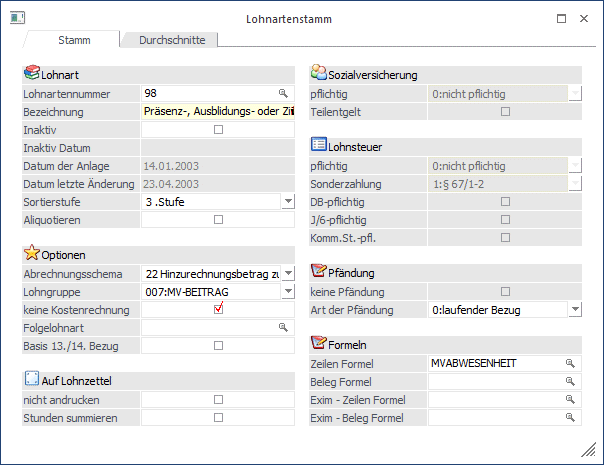
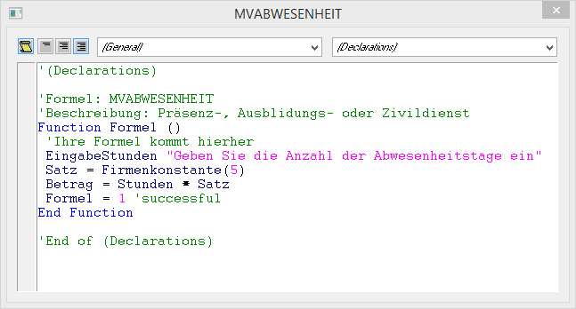
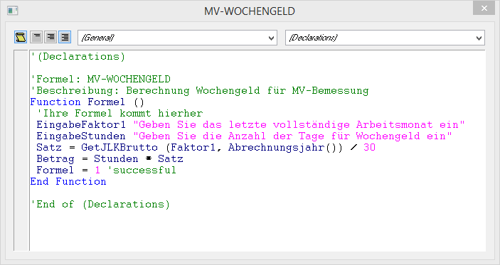
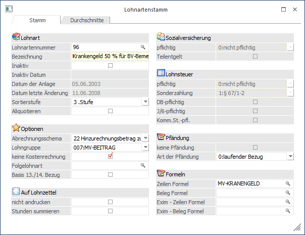
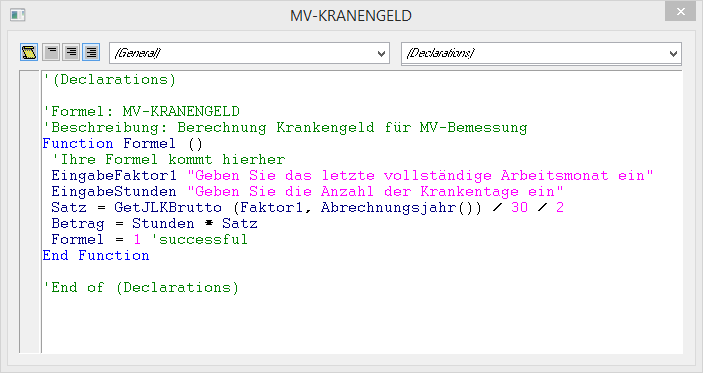

Nachdem für die Unterbrechungszeiträume teilweise nur "fiktive" Bezüge herangezogen werden müssen (diese Bezüge werden ja nicht tatsächlich abgerechnet und ausgezahlt), müssen im WinLine LOHN diese Bezüge gesondert verwaltet werden:
ad 1.) Präsenz-, Ausbildung- oder Zivildienst
In diesem Fall empfiehlt es sich, eine eigene Lohnart anzulegen. Besonderheit dabei: es muss das Abrechnungsschema "22 Hinzurechnungsbetrag zur BV-Bemessung" verwendet werden, das nur die BV-Bemessungsgrundlage erhöht.
Beispiel für die Lohnart "Präsenz-, Ausbildungs- oder Zivildienst"

Dazu ist es dann auch noch sinnvoll, das Kinderbetreuungsgeld als Firmenkonstante anzulegen, damit der Betrag nicht immer wieder neu eingegeben werden muss. Dazu kann dann auch noch die Formel so angelegt werden, das nur die Anzahl der Tage eingegeben werden muss, das Kinderbetreuungsgeld wird dann aus der Firmenkonstante geholt.
Beispiel für die Formel, wenn das KBG in der Firmenkonstante 5 gespeichert ist.

Mit dem Befehl "EingabeStunden" wird zuerst die Anzahl der Tage der Abwesenheit eingetragen. Mit der Funktion "Satz = Firmenkonstante(5)" wird die Firmenkonstante 5 (das ist in unserem Beispiel das KBG von € 14,53) abgeholt und in den Satz (Stundensatz) gestellt. Danach wird mit der Operation "Betrag = Stunden * Satz" das Ergebnis aus den Anzahl der Tagen * den KBG errechnet.
In der Abrechnung wird zuerst der "normale" Bezug für die 6 Arbeitstage erfasst. Dazu kommt dann die Lohnart "98 - Präsenz-, Ausbildungs- oder Zivildienst", mit der die restlichen 25 Tage mit KBG abgerechnet werden. Das KBG erhöht nur die BV-Bemessung, hat aber keinen Einfluss auf das Brutto oder den Nettoauszahlungsbetrag. Ab Juni wird dann nur mehr die Lohnart "98 - Präsenz-, Ausbildungs- oder Zivildienst" für 30 Tage abgerechnet.
ad 2.) Wochengeld
In diesem Fall empfiehlt es sich, eine eigene Lohnart anzulegen. Besonderheit dabei: es muss das Abrechnungsschema "22 Hinzurechnungsbetrag zur BV-Bemessung" verwendet werden, das nur die BV-Bemessungsgrundlage erhöht.
Beispiel für die Lohnart "Wochengeld"
Dazu kann dann eine Formel verwendet werden, die das Wochengeld automatisch errechnet.
Beispiel für eine Formel zur Berechnung des fiktiven Wochengeldes

Mit dem Befehl "EingabeFaktor1" wird die Zahl des Monats eingegeben, in dem der AN einen vollständigen Bezug erhalten hat. Diese Zahl wird gespeichert. Mit dem Befehl "EingabeStunden" wird die Anzahl der Tage angegeben, für die der AN Wochengeld bekommt. Mit dem Befehl "Satz = GetJLKBrutto (Faktor1, Abrechnungsjahr()) / 30" wird der Bruttobezug des aktuellen Abrechnungsjahres und des zuvor eingegebenen Monats abgeholt und durch 30 gerechnet. Und mit dem Befehl "Betrag = Stunden * Satz" wird die Anzahl der Tage mit dem errechneten Wochengeld multipliziert.
In der Abrechnung wird zuerst der "normale" Bezug für die ersten 9 Tage erfasst. Dazu kommt dann die Lohnart "97 - Wochengeld", die für 22 Tage abgerechnet wird. Ab Juni erfolgt nur mehr die Abrechnung der Lohnart "97 - Wochengeld", das nur mehr die Bemessungsgrundlage der BV erhöht.
ad 3.) Krankengeld
In diesem Fall empfiehlt es sich, eine eigene Lohnart anzulegen. Besonderheit dabei: es muss das Abrechnungsschema "22 Hinzurechnungsbetrag zur BV-Bemessung" verwendet werden, das nur die BV-Bemessungsgrundlage erhöht.
Beispiel für die Lohnart "Krankengeld BV 50 %"

Dazu kann dann eine Formel verwendet werden, die das Krankengeld automatisch errechnet.
Beispiel für eine Formel zur Berechnung des fiktiven Krankengeldes

Mit dem Befehl "EingabeFaktor1" wird die Zahl des Monats eingegeben, in dem der AN einen vollständigen Bezug erhalten hat. Diese Zahl wird gespeichert. Mit dem Befehl "EingabeStunden" wird die Anzahl der Tage angegeben, für die der AN fiktives Krankengeld bekommt. Mit dem Befehl "Satz = GetJLKBrutto (Faktor1, Abrechnungsjahr()) / 30 / 2" wird der halbe Bruttobezug des aktuellen Abrechnungsjahres und des zuvor eingegebenen Monats abgeholt und durch 30 gerechnet. Und mit dem Befehl "Betrag = Stunden * Satz" wird die Anzahl der Tage mit dem errechneten Krankengeld multipliziert.
In der Abrechnung März werden zuerst die "normalen" Bezüge für 12 Tage erfasst, dazu kommt dann das Krankengeld 100 % für die restlichen Tage. In der April-Abrechnung wird nur das Krankengeld 100 % abgerechnet. Im Mai wird für 7 Tage das Krankengeld 100 % abgerechnet, dazu kommt dann das Krankengeld 50 % für 24 Tage. Ebenfalls für 24 Tage muss nun die Lohnart "96 - Krankengeld BV 50 %" erfasst werden, die wiederum nur die Bemessungsgrundlage der BV erhöht. Im Juni wird das Krankengeld 50 % nur mehr für 4 Tage ausbezahlt, die Lohnart "96 - Krankengeld BV 50 %" hingegen muss für 30 Tage abgerechnet werden. Ab Juli wird nur mehr die Lohnart "96 - Krankengeld BV 50 %" abgerechnet.
ad 4.) Zeiten für Kinderbetreuung und Karenzzeiten und 5.) Unbezahlter Urlaub
Diese beiden Punkte haben für die Lohnverrechnung keine direkte Auswirkung, es müssen keine weiteren Lohnarten angelegt oder erfasst werden. Wird eine Lohnart mit dem Abrechnungsschema "07 Unbezahlter Urlaub ( "Blautage" )" abgerechnet, dann wird dieser Bezug auch nicht in die Bemessungsgrundlage der BV eingerechnet.